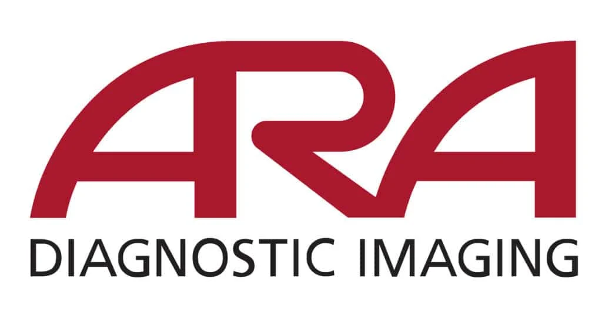
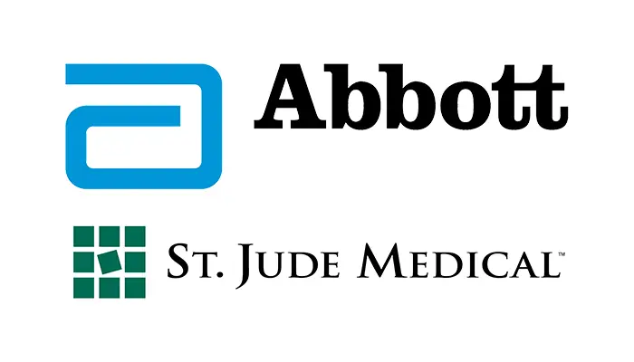

Experienced Professional with over 15 years of experience in designing and implementing comprehensive training programs. Studying UI design and web development. Skilled in needs assessment, instructional design, facilitation, and evaluation. Passionate about creating engaging and impactful learning experiences that drive individual and organizational performance. Proven track record of building strong relationships with stakeholders and delivering high-quality results on time and within budget. Seeking a challenging role in a dynamic organization where I can leverage my expertise to drive innovation and growth.
|  |
- Employee Development Specialist, ARA Diagnostic Imaging, Austin, Texas
- Designed and delivered a blended training program for Hospital Relations team: live ILT, virtual ILT, self-paced e-learning modules.
- Created management training modules and employee orientation programs.
|
 |
- Training Specialist, 3M, Austin, Texas
- Designed and delivered training for 3M's Motor Vehicle Systems & Services division.
- Created new hire training program for new employees in the MVSS division.
|
|
- Project Manager, Applied Materials, Austin, Texas
- Managed "Conflict Minerals" supplier communication training and outreach.
- Coordinated project communication: status reports, Sharepoint site.
|
|  |
- Training and Change Management Consultant, St. Jude Medical, Austin, Texas
- Planned and delivered training to field sales and internal teams at SJM for software deployment and business process change projects.
- Created all training and reference material (release notes, FAQs, manuals, etc.).
|
|
- Media Systems Trainer, GSD&M Advertising, Austin, Texas
- Designed and delivered software training for GSD&M's media department.
- Provided end-user technical support for all media applications at the agency.
|
|
- Market Center Technical Manager and Agent Services Coordinator, Keller Williams Realty Southwest Market Center, Austin, Texas
- Conducted weekly new hire/agent orientation sessions and weekly technical training classes for real estate agents.
- Managed all hardware, software, networks, servers, and office equipment at the nation's largest single real estate office.
|
|
- Child Development Training Specialist, Connections Resource Center, Austin, Texas
- Trained child care providers and parents on a variety of topics in child development through instructor-led sessions, on-site workshops, and one-on-one mentoring visits.
- Gathered metrics on success of training for the purposes of grant writing.
|
|
- Parent Educator, Mental Health Association in Texas, Austin, Texas
- Provided training classes for child care providers and foster parents.
- Provided counseling services to pregnant and parenting students at Crockett H.S.
|